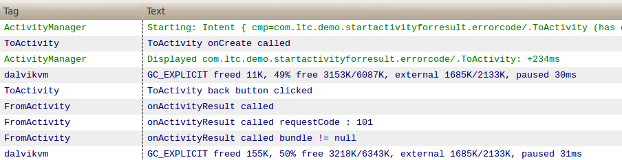

Android学习StartyActivityForResult
开篇：
Activity间传递数据，在很多应用中都有。上一篇，也写了如何传递自定义的类或者ArrayList。很多时候调用者也希望被调用这能返回一些数据。
这篇就讲一下这个问题，和开发过程中遇到的两个问题（onActivityResut被提前调用和返回无响应）及解决方法。
1. 基础学习
调用者Actiivity中需要override onActivityResult()方法。
调用时使用startActivityForResult()方法。
被调用Activity要在finish()之前调用setResult()方法返回数据。
具体看代码：
@Overrideprotected void onActivityResult(int requestCode, int resultCode, Intent data) {
Log.d(TAG, "onActivityResult called");
switch (requestCode) {
case M_REQUEST_CODE:
Log.d(TAG, "onActivityResult called requestCode : " + requestCode);
if (RESULT_OK == resultCode) {
Bundle bundle = data.getExtras();
if (bundle != null) {
Log.d(TAG, "onActivityResult called bundle != null");
int c = bundle.getInt("c");
((TextView) findViewById(R.id.from_msg_textview))
.setText("c:" + c);
} else {
Log.d(TAG, "onActivityResult called bundle == null");
}
}
break;
default:
break;
}
}
复写onActivityResult()方法，关键的三个参数requestCode是startActivityForResut时传递的int型参数，用以标识哪次请求，resultCode是返回时传递的参数，用以标识被调用者返回的code，data就是数据啦，使用getExtras()把它取出来。
Intent intent = new Intent();intent.setClass(FromActivity.this, ToActivity.class);
Bundle bundle = new Bundle();
bundle.putInt("a", 111);
bundle.putInt("b", 222);
intent.putExtras(bundle);
//注意： equestCode If >= 0, this code will be returned in onActivityResult() when the activity exits.
//例子中 M_REQUEST_CODE = 101
startActivityForResult(intent, M_REQUEST_CODE);
调用方法。关键是startActivityForResult(intent, M_REQUEST_CODE); 这里看代码里的注释。
Intent intent = new Intent();Bundle bundle = new Bundle();
bundle.putInt("c", a + b);
intent.putExtras(bundle);
ToActivity.this.setResult(RESULT_OK, intent);
ToActivity.this.finish();
这里是被调用Activity返回数据关键代码。Intent不用再指定Activity。
上几张截图:


2. onActivityResut被提前调用
异常情况总会有的，这里就出现了异常，当我再次执行的时候，发现被调用这数据接收正常，而调用者显示的返回值不正常了。打印以下Log。

可以看出，在被调用的Activity oncreate之前，调用者已经执行了。警告说有一被调用的Activity 启动了一个新的Task，activity result被取消了。这主要是由于我再manifest文件中把被调用的Activity的launchMode设成了singleInstance。那再测试一下singleTask和singleTop。看图，感觉是由于启用了新的Task，Activity之间就没法回传数据了。

3. 返回无响应
1.中我把M_REQUEST_CODE 设成了101， 现在改成 <0 的数据试试。就会发先onActivity不会被调用了。
关键还是看API文档
//注意： equestCode If >= 0, this code will be returned in onActivityResult() when the activity exits.//例子中 M_REQUEST_CODE = 101
startActivityForResult(intent, M_REQUEST_CODE);